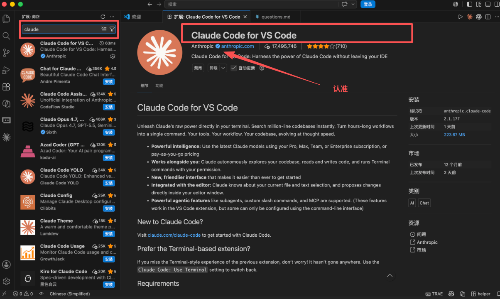
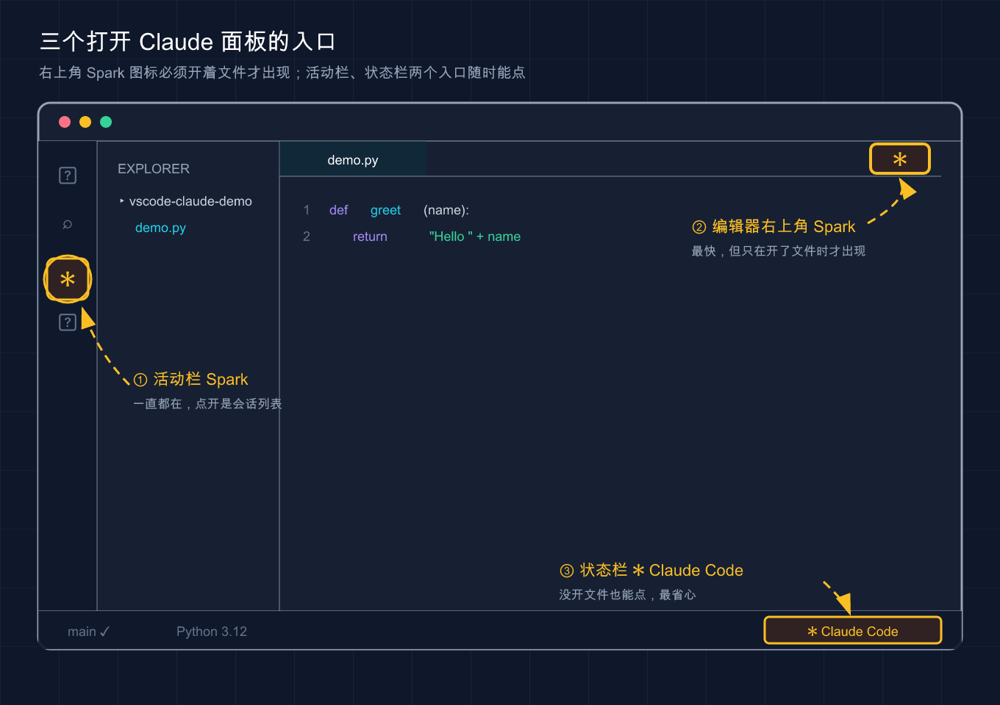
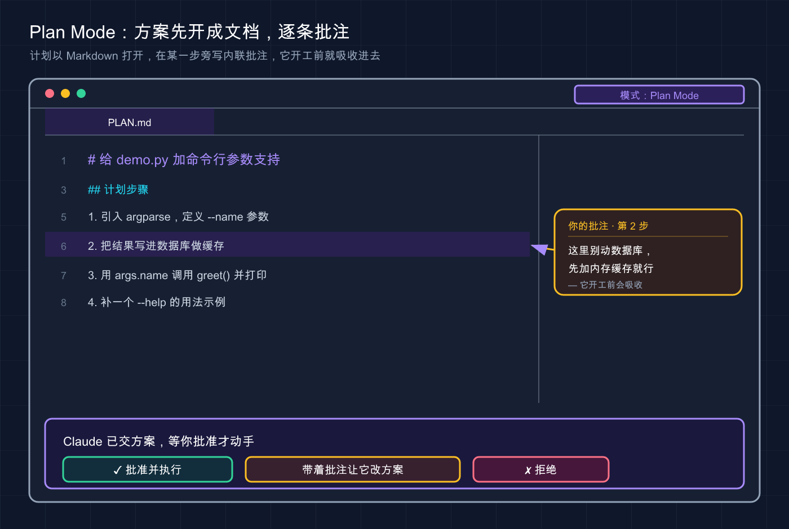

📚 系列导航：上一篇 07 第一次使用 带你在终端跑通了第一个例子。这一篇把 Claude Code 搬进 VS Code——同样的能力，换成有图形界面的玩法。
刚转去用 VS Code 扩展那阵子，很容易干一件挺蠢的事。
终端里跑得好好的 Claude Code，装完扩展想试试图形界面，打开一个空文件夹，左翻右翻就是找不到官方说的那个「Spark 图标」（工具栏里的火花形图标，Claude Code 在 IDE 里的入口标识）。这时候很容易以为装坏了，卸了重装、重启、清缓存，折腾了快二十分钟，最后翻文档才发现——那个图标只在你打开了具体文件时才出现，光开文件夹不够。对着一个空工作区找图标，找一辈子也找不到。
说白了，VS Code 集成不难，但它跟终端是两套交互逻辑，有些「想当然」会让你卡在最开始那一步。这篇把这些坑提前给你标出来。
看完这一篇，你会拿到：
- 在 VS Code（含 Cursor 等分支）装上 Claude Code 扩展的完整步骤，外加「图标找不到」的排查清单
- 并排 diff（逐行审阅改动）、
@提及、计划审阅这三个图形界面独有的爽点怎么用 - 一张「扩展 vs CLI 该用哪个」的对照表，外加一组常用快捷键
01 先搞清楚：扩展和 CLI 是什么关系
「我已经会用终端里的 claude 了，还要不要装扩展？」先给结论：扩展不是替代 CLI，是在它外面套了一层图形界面。装扩展时会顺带把 CLI 带上，两者共享同一份 ~/.claude/settings.json 配置；对话历史可以恢复，但不是实时同步——你在扩展里聊到一半，回头在终端跑 claude --resume 就能主动接续那段对话。
类比：同一个后厨，两个点单窗口。 CLI 是趴在厨房窗口喊单——快、全、什么都能点；扩展是大堂服务员，帮你把菜单做得图文并茂、点单看进度更直观，但有几样「隐藏菜单」只有趴窗口才点得到。后厨是同一个，菜一模一样。
到底什么时候用哪个？官方给了张能力对照，整理如下：
| 功能 | CLI（终端） | VS Code 扩展 |
|---|---|---|
| 命令和 skills | 全部 | 子集（输入 / 看可用的） |
| MCP server 配置 | 完整 | 部分（用 CLI 加、面板里 /mcp 管） |
| Checkpoints（检查点） | 支持 | 支持 |
! bash 快捷键 |
支持 | 不支持 |
| Tab 补全 | 支持 | 不支持 |
| 并排 diff、选中代码即上下文 | 需连接 IDE | 原生，开箱即用 |
一句话：写代码、审阅改动这类「跟文件打交道」的活，扩展明显更好用；!ls 这种 bash 快捷键、Tab 补全只有 CLI 有。一般的用法是主力开在扩展里，要批量跑命令或用扩展里没有的命令，就在集成终端直接敲 claude——历史是通的，无缝切换。
💡 一句话总结：扩展和 CLI 是同一个引擎的两张脸，共享历史和配置，按手头的活随时切换，不用二选一。
02 安装：三种姿势，外加图标找不到的排查
装之前先看一眼版本
官方硬性要求：VS Code 1.98.0 或更高版本，低于这个版本装不上或不工作（点「帮助 → 关于」看版本号）。首次打开扩展时会让你登录 Anthropic 账户；公司走 Bedrock、Vertex AI 等第三方提供商的，配置方式不同，末尾单独提。
三种安装方式
方式一：应用市场搜（最稳，推荐新手用）
在 VS Code 里按 Cmd+Shift+X（Mac）或 Ctrl+Shift+X（Windows/Linux）打开扩展视图，搜索 Claude Code，点安装。

上图是扩展视图里搜 Claude Code 的样子：红框那条「Claude Code for VS Code」、发布者带蓝色认证勾的 Anthropic 才是官方，认准它点进去装。
这里有个小白最容易踩的坑：搜 Claude Code 会跳出一堆名字相似的扩展，认准发布者是 Anthropic 的那个，别装成第三方仿冒的。
方式二：点链接直装
开着 VS Code 时，点链接 vscode:extension/anthropic.claude-code 会直接跳到扩展安装页（Cursor 把 vscode: 换成 cursor:）。
方式三：非主流编辑器 / 装不上时
扩展也能装在 VS Code 的其他分支里（Cursor、Devin Desktop、Kiro 等）——在它们的扩展视图搜 Claude Code，或从 Open VSX 注册表 装。万一死活装不上，别死磕，官方兜底方案是在集成终端直接跑 claude。
国内提示：安装、登录授权、之后让 Claude 干活都要连 Anthropic 服务，全程需要魔法上网，和终端版一致。
装完图标找不到？照这张清单排查
这就是开头那个坑。装好后扩展默认不弹窗，得自己把面板叫出来。最快的方式：先打开一个具体文件，再点编辑器右上角工具栏里的 Spark 图标（一个像火花的小图标）。

上图把三个入口的位置都标了出来：编辑器右上角的 Spark 图标（②，最快但只在开着文件时才出现）、活动栏的 Spark（①，一直都在）、状态栏的 ✱ Claude Code（③，没开文件也能点）。
关键就一句：Spark 图标只在你打开了文件时才出现，光开文件夹不够。 如果还是看不到，按官方这个顺序查：
| 现象 | 排查动作 |
|---|---|
| 编辑器右上角没图标 | 先打开一个文件（不是只开文件夹） |
| 打开文件了还是没有 | 确认 VS Code ≥ 1.98.0（帮助 → 关于） |
| 版本也够 | 命令面板跑 Developer: Reload Window 重载窗口 |
| 重载也没用 | 临时禁用其他 AI 扩展（Cline、Continue 等），可能冲突 |
| 工作区是「受限模式」 | 扩展在受限模式下不工作，需信任工作区 |
实在找不到 Spark 图标，还有两个备选入口：
- 活动栏（最左侧那竖排图标）里的 Spark 图标——这个一直都在，点开是会话列表。
- 状态栏（窗口右下角）的 ✱ Claude Code——没开文件也能点，平时更顺手的就是这个，省得纠结有没有开文件。也可以走命令面板（
Cmd+Shift+P/Ctrl+Shift+P）输入Claude Code。
第一次点开面板会出现登录屏，点登录、在浏览器完成授权即可。（如果设了 ANTHROPIC_API_KEY 却还被要求登录，多半是 VS Code 没继承到终端环境变量，官方解法是从终端用 code . 启动 VS Code 把变量带进去。）
💡 一句话总结：装扩展认准 Anthropic 发布者，Spark 图标必须开着文件才出现——找不到先开文件，再不行就用右下角状态栏那个入口。
03 diff 视图：改动当面对质，看清了再点头
这是很多人最早被扩展圈粉的功能。终端版改文件时 diff 是文本符号画的，文件一大、改动一多就看着吃力。扩展把这事搬进了 VS Code 原生的 diff 视图——红绿高亮标增删，跟你平时看 Git diff 一个观感。
类比：合同签字前的「修订模式」对照。 对方把改好的合同发回来，左边原稿、右边改动版，每处增删都标得清清楚楚——你不是闭眼签字，是逐条看过才落笔。Claude 改代码也一样，把改动摆出来请求许可，你有三个选择：接受、拒绝、或直接告诉它改成别的样子。
还有个容易被忽略、用了一阵子才会注意到的细节：接受之前可以直接在 diff 视图里手动改 Claude 的建议，改完它会知道「你动过了」，不再按旧版往下走。比如让它重构一个 200 多行的函数，它一口气改了七八处，要是在 diff 里一眼扫到一处把边界判断写反了，当场在右侧改对再接受，就省了一轮来回。
💡 一句话总结：diff 视图把每处改动摆到你面前，看清、能当场改、再决定接不接受，比终端的文本 diff 安全得多。
04 @ 提及和选中代码：把上下文喂准
让 Claude 干活最大的浪费，是它「不知道你说的是哪段代码」于是绕圈子猜。扩展里有两招把上下文喂得又快又准。
第一招：@ 提及文件 / 文件夹
在提示框里输入 @，跟上文件名或文件夹名，Claude 就会去读那份内容。它支持模糊匹配，不用打全名：
> 解释一下 @auth 的逻辑（会自动匹配 auth.js、AuthService.ts 等）
> @src/components/ 里有什么？（文件夹记得加结尾的斜杠 / ）
类比：开会前先把资料甩进群。 与其口头描述「就那个登录相关的文件」，不如直接 @ 把文件丢给它，省得它满项目翻找、翻错。对超大 PDF 还能让它只读指定页（如第 1-10 页），不用啃完整本。
第二招：选中代码，它自动看见
这招比 @ 还省事：直接在编辑器里选中一段代码，Claude 就自动看到了，提示框下方会显示「已选中 XX 行」。你直接问「这段为什么会报错」，它就知道你指哪段。
几个常用配套技巧：
- 插带行号的引用：按
Option+K/Alt+K，自动插入像@app.ts#5-10这样带路径和行号的提及（需编辑器焦点）。 - 临时不让它看选中：点提示框底部「选择指示器」切换，出现「斜杠眼睛」图标就表示这段对 Claude 隐藏了——选中只是想复制时用得上。
- 拖文件当附件：拖文件到提示框时按住
Shift；点附件上的×移除。
比如排查一个样式 bug，CSS 嵌套了五六层。直接选中那段可疑规则丢一句「这里为什么不生效」，它两轮就定位到是父元素的 overflow: hidden 把子元素裁了——光用文字描述那段嵌套，得打半天字。
⚠️ 选中文本和当前打开的文件默认会随提示发给 Claude。像
.env这种敏感文件，官方建议给路径加一条Read拒绝规则，匹配上后它就不会到达 Claude（以官方文档为准）。
💡 一句话总结：
@提及喂文件、选中代码自动喂上下文——把「你说的是哪段」这个最大的猜测成本直接干掉。
05 计划审阅：让它先交方案，你批了再动手
这一节大概是扩展相比终端体验提升最大的地方。先说权限模式：点提示框底部的模式指示器可以切换，Claude Code 有这么几档：
| 模式 | Claude 的行为 | 什么时候用 |
|---|---|---|
| 正常模式（默认） | 每个操作前都问你同不同意 | 不熟的任务、想全程把关 |
| Plan Mode（计划模式） | 先描述打算怎么做，等你批准才动手 | 大改动、多文件、想先看方案 |
| 自动接受模式 | 直接改，不再逐个询问 | 信得过的小批量重复改动 |
还有第四档
bypassPermissions（绕过所有权限检查），需在设置里开启allowDangerouslySkipPermissions，仅适用于完全隔离的沙箱环境，日常不推荐开。
类比：实习生动手前问不问你。 正常模式是「每步先举手问」、自动接受是「放手让他干」——而计划模式最特别，像实习生先交一份「我打算这么做」给你过目，你点头了才开干。
计划模式在 VS Code 里有个终端给不了的待遇：Claude 会把计划自动作为一份完整的 Markdown 文档打开，你能在上面加内联批注。不用笼统回一句「第二步不对」，而是直接在「第二步」那行旁边写「这里别动数据库，先加缓存」，它开工前就把你的意见吸收进去——比口头返工精确得多。

上图是计划模式打开的 Markdown 计划文档：Claude 把每一步列出来，你在「第 2 步」那行旁边写下内联批注（「别动数据库，先加内存缓存」），它批准开工前就把这条意见吸收进去。
想让它成默认？把设置里的 claudeCode.initialPermissionMode 改成 plan。一个稳妥的习惯是凡是「多文件、超过 50 行」的改动，先切计划模式。这里有个常见教训：图省事全程开自动接受，让它给一个模块加日志，它可能顺手把好几个文件的导入顺序也「优化」了一遍，回头得花十分钟才理清它动了哪些地方。大改动一律先看计划，在方案阶段就框住它，比事后收拾干净得多。
💡 一句话总结：计划模式 = 先看方案再动手，还能在 Markdown 计划上逐条批注——多文件大改动前切它，省下大把返工。
06 动手环节：10 分钟跑通图形界面全流程
下面从零走一遍，每步都给了「你该看到什么」，照着做就能自验装没装对、会不会用。
第 0 步：建个最小练手项目
不用真项目，新建个空文件夹放个文件就行。终端跑：
mkdir vscode-claude-demo && cd vscode-claude-demo
printf 'def greet(name):\n return "Hello " + name\n\nprint(greet("world"))\n' > demo.py
code .
预期：VS Code 打开这个文件夹，左侧资源管理器里能看到 demo.py。（没装 code 命令行工具就手动打开这个文件夹。）
第 1 步：打开 Claude 面板并登录
点开 demo.py（记住，一定要打开文件），点右上角 Spark 图标，首次出现登录屏就点登录、在浏览器完成授权。
预期：右侧出现 Claude Code 对话面板，顶部不再显示「未登录」。
第 2 步：选中代码 + 让它改，看内联 diff
选中 demo.py 里 greet 函数那两行，提示框下方应显示「已选中 2 行」。这时输入：
帮我把它改成用 f-string，并加上类型注解
预期：Claude 没问你「哪个函数」（说明选中上下文喂进去了），直接弹出并排 diff——右边把 return "Hello " + name 改成 return f"Hello {name}"、签名加了类型注解，下方出现接受 / 拒绝提示。看清再点接受。
第 3 步：试一次计划模式
点提示框底部的模式指示器切到 Plan Mode，输入一个稍大的需求：
给这个文件加上命令行参数支持，让用户能从终端传入名字
预期：Claude 不直接改文件，先打开一份 Markdown 计划文档列出打算怎么做（比如引入 argparse）。你确认或在某步旁边写批注，它再执行。跑到这步，内联 diff、选中提及、计划审阅三个核心你就都用过一遍了。
07 顺手收藏：常用快捷键和「切到 CLI」
一组常用快捷键（来自官方，平台差异已标）：
| 操作 | 快捷键 | 说明 |
|---|---|---|
| 切换焦点（编辑器 ↔ Claude） | Cmd+Esc / Ctrl+Esc |
光标在哪个面板，快捷键就作用在哪 |
| 在新选项卡打开对话 | Cmd+Shift+Esc / Ctrl+Shift+Esc |
多开几个对话并行干活 |
插入 @ 提及引用 |
Option+K / Alt+K |
需编辑器获得焦点 |
| 重新打开刚关掉的会话 | Cmd+Shift+T / Ctrl+Shift+T |
默认开启 |
| 开始新对话 | Cmd+N / Ctrl+N |
默认关闭，需在设置里开 enableNewConversationShortcut |
macOS Tahoe+ 有个坑：系统「游戏覆盖」默认占用了
Cmd+Esc，会把它截胡。去「系统设置 → 键盘 → 键盘快捷键 → 游戏控制器」清掉那个勾，或把Claude Code: Focus input重新绑到别的键。
想用回 CLI 风格界面？ 打开集成终端（Cmd+` / Ctrl+`）跑 claude 即可——CLI 会自动连上 VS Code，照样能用原生 diff（外部终端则跑 /ide 手动连）；或在设置勾上 使用终端（useTerminal）让扩展直接以终端模式启动。
第三方提供商（Bedrock / Vertex AI / Foundry）：先勾 禁用登录提示（
disableLoginPrompt），再按提供商指南配~/.claude/settings.json（以官方文档为准）。
💡 一句话总结：
Cmd+Esc切焦点最常用、Option+K插引用，想回终端味就跑claude或勾useTerminal——图形和命令行随你换。
08 小结
这一篇把 Claude Code 从终端搬进了 VS Code，核心就这几件事：
- 扩展 ≠ 替代 CLI：同一个引擎、共享历史和配置，写代码用扩展、要 CLI 专属功能就切终端。
- 装好的第一关是找图标：认准 Anthropic 发布者，Spark 图标得开着文件才出现，找不到就用右下角状态栏入口。
- 三个图形界面爽点：并排 diff（看清再点头、能当场改）、
@提及 / 选中代码（喂准上下文）、计划审阅（先看方案、能逐条批注）。
你现在应该能独立装好扩展、用并排 diff 审阅改动、用 @ 和选中喂准上下文、大改动前切计划模式。这套流程跑顺了，日常写代码就能稳定靠它。
下一篇 09 JetBrains 集成——如果你的主力是 IntelliJ IDEA、PyCharm 这类 JetBrains 全家桶，Claude Code 同样有原生插件。我们会看看它和 VS Code 扩展有哪些一样、哪些不一样，以及 JetBrains 用户特有的几个配置点。